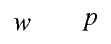

Metapost and TeX labels
Default Metapost has the concept of two types of labels, postscript labels and TeX labels. Postscript labels are created using
label("text", location);
while TeX labels are created using
label(btex text etex, location);
In the latter case, Metapost collects everything between btex and etex in a
separate file, processes that file through TeX, and includes the resulting
postscript code at an appropriate location. Such a Golberg-esque mechanism is
needed to propertly typeset mathematics, get proper kerning, etc.; tasks that
TeX can do but Postscript cannot.
ConTeXt has always been tightly integrated with Metapost, but in the pdftex days typesetting labels was slow. ConTeXt (i.e. pdftex) calls Metapost (to draw a figure, say), and then Metapost calls pdftex (to typeset a label), and imports the result to the postscript; this postscript file is passed to ConTeXt and translated into PDF code using TeX macros and the result in inserted in the PDF file that pdftex is generating. Phew!
Six or seven years ago, Hans Hagen and Mojca Miklavec had an idea to speed up this process by collecting all the labels at the ConTeXt end, typesetting them in boxes, and pass on the dimension of the boxes to Metapost. See Mojca’s My Way describing this mechanism. To use this feature, one had to type:
label(\sometxt{text}, location);
With luatex, Metapost can be called as a library, and the basic idea of preprocessing the labels at the TeX end and passing the resulting dimensions to Metapost has been implemented more robustly in Lua. (The conversion of the PS generated by Metapost to PDF is also done in Lua). So one could just type
label(btex text etex, location);
and ConTeXt would parse the Metapost environment and do all the book-keeping at the back.
However, I had always been unstastified with the user interface. There are very few situations where I as a user want postscript labels. So, why not redefine the label macro so that
label("text", location);
is equivalent to the btex ... etex version. I had made such a suggestion
back in 2007, and for some years had been using a private macro for such
purposes.
Today, while answering a question at TEX.SX, I noticed that now there is no difference between the postscript and the TeX labels!. For example
\setupbodyfont[times]
\starttext
\startMPpage[offset=2mm]
draw "$w$" infont defaultfont scaled defaultscale;
draw btex $p$ etex shifted (1cm,0);
\stopMPpage
\stoptext
gives

Notice that both w and p are in the Times Math font. So, there is no need for
those pesky btex ... etex tags anymore.
I really don’t know when this change was implemented. As far as I can tell, nothing has changed at the ConTeXt end, so it appears that MetaPost is now directly parsing the postscript labels using TeX. Nonetheless, this means that there is one less thing to worry about while learning and using Metapost. Yay!